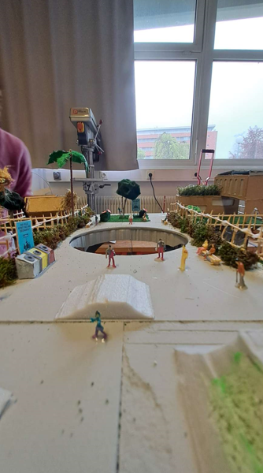
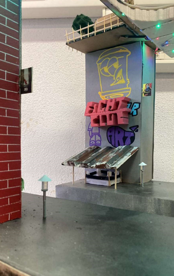
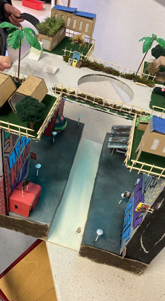
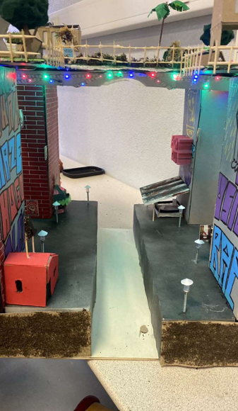
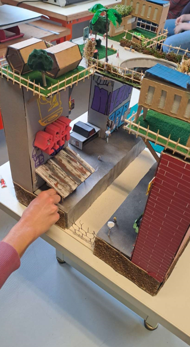
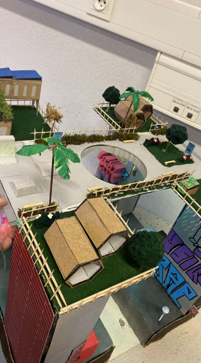
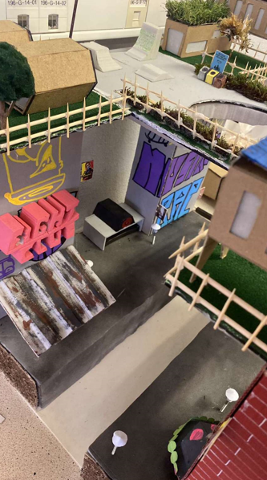
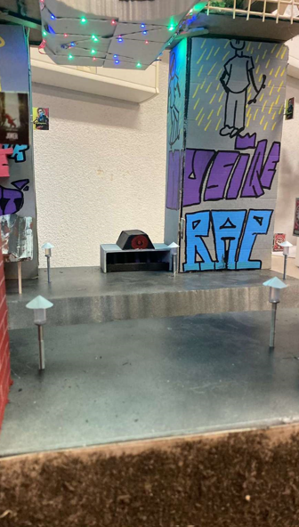
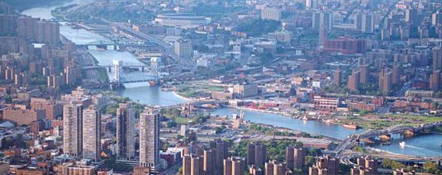
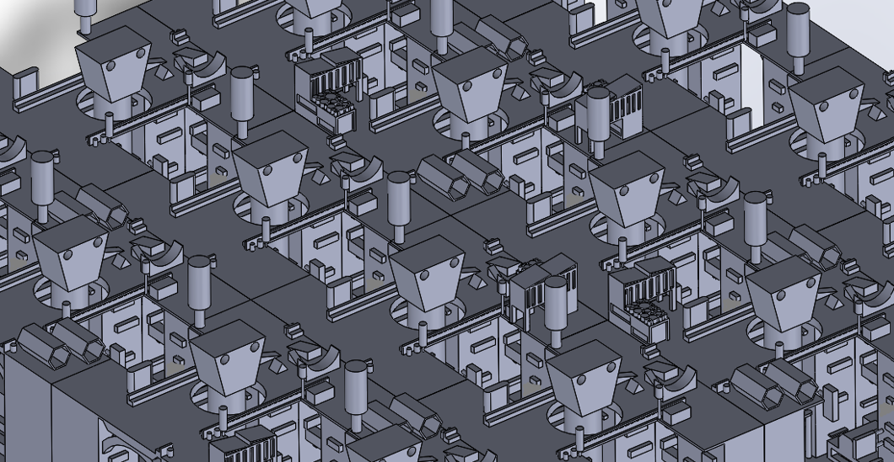

Le projet Skyline bridge née dans les années 3000 dans la ville de New-York, à cette époque la surpopulation est ingérable et tout le pays est urbaniser donc impossible de s’étendre d’avantage mais construire en hauteur est effectivement possible. L’aire étant extrêmement polluer la population riche en a mare de vivre dans des quartiers sales et ou la criminalité est grandissante. Le projet Skyline a pour but de régler tous ces problèmes, des maisons serons construites sur les toits et un immense réseau de pont relirait toutes les habitations et créeraient une ville au-dessus de tout. Une ville ou la végétation serais verdoyante et loin de toute forme de pollution, une ville ou les nombreuses infrastructures permettraient une vie parfaite loin de tout problème. Le pont se situe donc entre tous les toits et est équiper de plateforme ascenseur un peu partout de façon à ne pas créer une séparation totale. Ce pont permet de crée un tout nouvel écosystème, une nouvelle ville, une nouvelle vie.









Notre maquette se situe juste au dessus de Harlem River entre Manhattan et le Bronx.